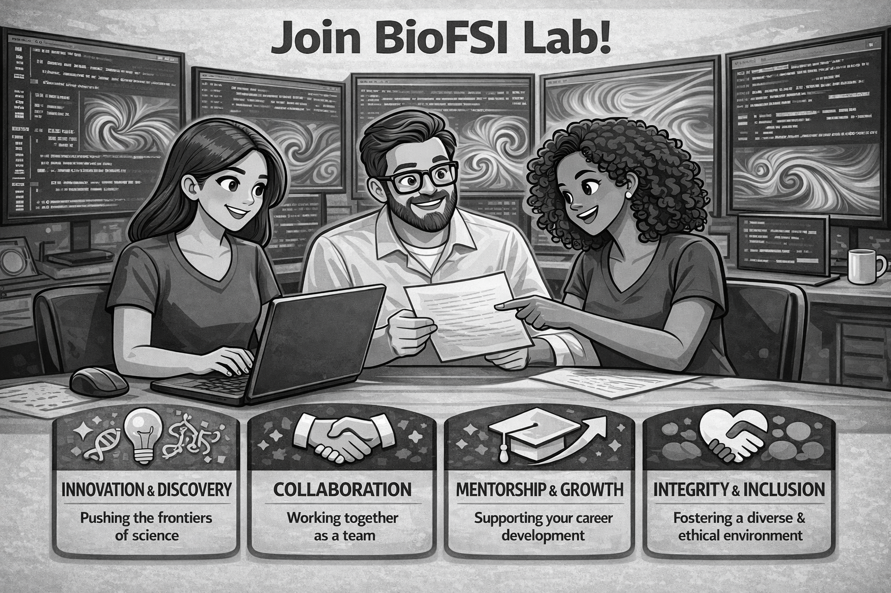

BioFSI Lab Research Culture
At BioFSI Lab, our research culture is anchored in four core principles. We champion innovation and discovery, pushing the frontiers of fluid-structure interaction, computational mechanics, and bio-inspired engineering through rigorous, curiosity-driven inquiry. We believe impactful science is inherently collaborative, fostering a team environment where ideas are openly exchanged across disciplines and career stages. Through structured mentorship and growth, we support the technical, intellectual, and professional development of every member - from undergraduate researchers to postdoctoral scholars - equipping them with both deep expertise and transferable skills. Above all, we uphold integrity and inclusion, cultivating a respectful, diverse, and ethically grounded research environment where excellence and equity advance together.

Open Post-Doctoral Positions in BioFSI Laboratory:
Prospective postdoctoral scholars from around the world are warmly invited to get in touch to explore postdoctoral fellowship opportunities in the UK. I am happy to discuss potential projects, supervise competitive applications, and advise on suitable schemes such as the Royal Society Newton International Fellowship, Marie Skłodowska-Curie Actions (MSCA) Individual Fellowships, Royal Society University Research Fellowship, Royal Academy of Engineering Research Fellowships, and various university-specific schemes. If you are motivated to pursue high-impact research in bio-inspired fluid mechanics, Fluid-Structure Interactions, or GPU-accelerated computational modelling, please feel free to contact me to discuss possibilities and eligibility.
Open PhD Positions in BioFSI Laboratory:
Dr. Bose is looking to supervise PhD projects in the following areas: Unsteady Aerodynamics, Aeroelasticity, Fluid-Structure Interactions, Bio-Inspired Engineering, Vortex Dynamics, Computational Fluid Dynamics.
UK/EU (settled) candidates:
PhD Position 1: Propeller-Wing Wake Interactions for Urban Air Mobility Systems - Application Link.
International candidates:
We warmly welcome international candidates to explore our open PhD positions, enquire about national scholarship pathways, and discuss opportunities for self-sponsored doctoral study within our research group.
Recently closed positions:
PhD Position: The Chaotic Voice: Nonlinear Fluid-Structure Interaction in Abnormal Phonation - Application Closed.